Sıfır ve İkinci El Klima Satışı
İhtiyacınıza ve bütçenize uygun sıfır ve ikinci el split, kaset ve salon tipi klimaları güvenilir seçeneklerle temin ediyoruz. İkinci el cihazlarda teknik kontrol ve bakım yapılarak teslim ediyoruz.
Sıfır ve ikinci el klima satışı, montaj, tamir-arıza ve kimyasal temizliğin yanı sıra artık buzdolabı, çamaşır ve bulaşık makinesi, fırın ve tüm beyaz eşya tamirini de aynı gün, garantili ve 7/24 ulaşılabilir olarak yapıyoruz.
Klima alımından kurulumuna, arıza onarımından düzenli bakım ve temizliğine kadar ihtiyacınız olan her hizmeti tek elden sunuyoruz.
İhtiyacınıza ve bütçenize uygun sıfır ve ikinci el split, kaset ve salon tipi klimaları güvenilir seçeneklerle temin ediyoruz. İkinci el cihazlarda teknik kontrol ve bakım yapılarak teslim ediyoruz.
Yeni aldığınız veya taşınma sonrası sökülen klimanızın montajını, iç/dış ünite bağlantılarını ve vakumlama işlemini standartlara uygun, güvenli ve düzgün şekilde gerçekleştiriyoruz.
Soğutmayan, gaz kaçıran, ses yapan veya hiç çalışmayan klimalarınız için arıza tespiti, gaz dolumu ve parça değişimi dahil hızlı ve garantili tamir hizmeti sunuyoruz.
Klima evaporatör ve serpantin yüzeylerinde biriken inatçı kir, bakteri ve küfleri özel basınçlı temizlik cihazlarımız ve zararsız antibakteriyel kimyasallarla derinlemesine temizliyoruz. Hava kalitenizi maksimuma çıkarıyoruz.
Ev ve ofis tipi standart split klimalarınızın iç ünite filtreleri, fan pervanesi, drenaj tavası ve dış ünite serpantinlerini titizlikle temizliyoruz. Kötü kokuları önlüyor, yüksek performans ve enerji tasarrufu sağlıyoruz.
Büyük ölçekli ticari işletmeler, oteller ve iş merkezlerinde kullanılan VRF ve multi klima sistemlerinin bakımını uzman kadromuzla yapıyoruz. Sistem verimliliğini korumak için dış üniteleri ve tüm iç üniteleri temizliyoruz.
Asma tavanlarda konumlandırılan kaset tipi klimaların 4 yönlü hava panellerini, yoğuşma pompalarını ve evaporatör peteklerini özel koruyucu kılıflar kullanarak çevreye zarar vermeden basınçlı su ve kimyasalla temizliyoruz.
Yüksek hava debisine sahip salon tipi büyük kapasiteli klimaların geniş serpantin yüzeylerini, hava filtrelerini ve iç fan sistemlerini temizliyoruz. Yüksek hava akışının kesintisiz ve temiz olmasını sağlıyoruz.
Klimanızın iç ünitesinde biriken bakteri, küf ve virüsleri özel antibakteriyel solüsyonlarla yok ediyoruz. Astım, alerji ve solunum yolu rahatsızlıkları için kritik olan derin hijyen hizmeti, kötü kokuların ve toz üflemesinin önüne geçer.
Buzdolabı, çamaşır ve bulaşık makinesi, kurutma makinesi, fırın, ocak ve ankastre cihazlarınızın tüm marka arızalarını adreste, garantili ve aynı gün onarıyoruz. Tüm beyaz eşya markalarına servis veriyoruz.
Alanya geneli mobil servisimizle klima alımından tamirine, kurulumundan bakımına kadar güvenilir ve profesyonel hizmet sunuyoruz.
Alanya içinde 7/24 hızlı ulaşım sağlayarak talebinizi oluşturduğunuz gün adresinize gelip hizmetinizi gerçekleştiriyoruz.
Yaptığımız her satış, montaj, tamir ve temizlik işlemi garantilidir. Müşteri memnuniyetini en üst düzeyde tutuyoruz.
Klimanıza zarar vermeyen profesyonel montaj ve basınçlı yıkama ekipmanları, koruyucu kılıflar kullanarak sıfır kirlilikle hizmet veriyoruz.
İşlem öncesinde satış, montaj veya bakım için yapılacak tüm işlemleri belirtir, sonradan sürpriz ek ücret talep etmeyiz.
Klima bakımı ve temizliği öncesi-sonrası görüntülerle sunduğumuz hijyen farkını inceleyin.
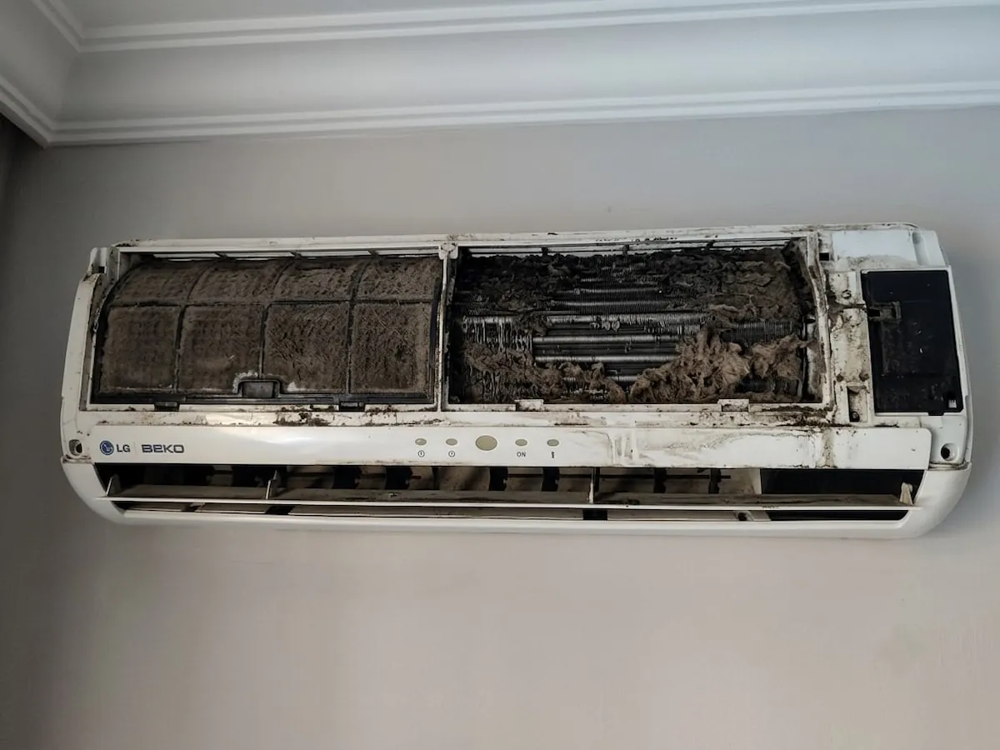
Önce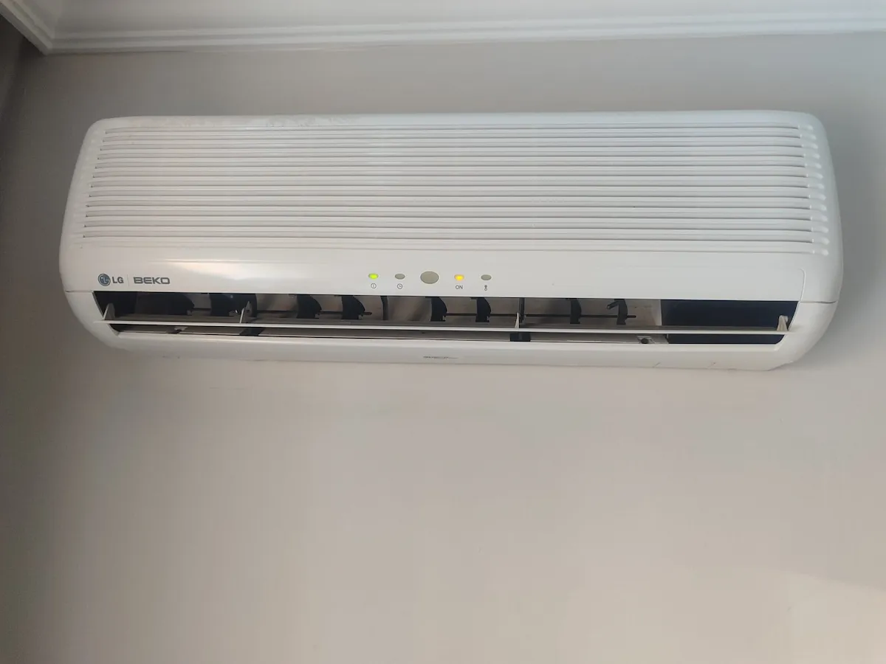
Sonra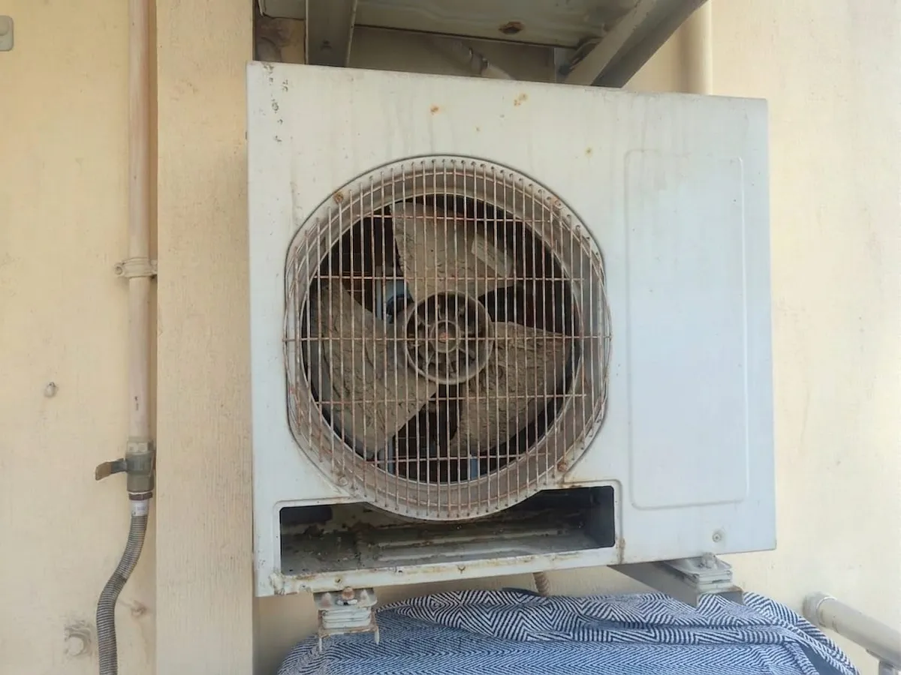
Önce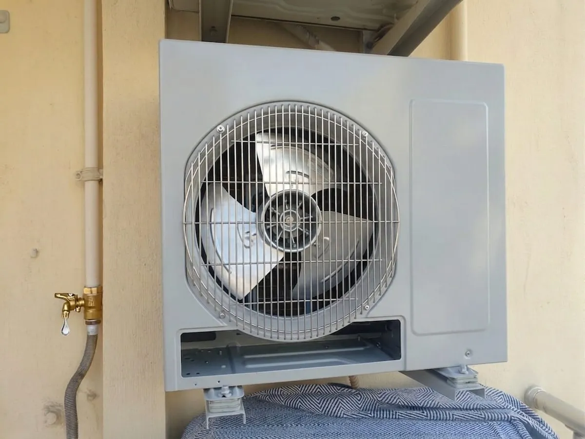
Sonra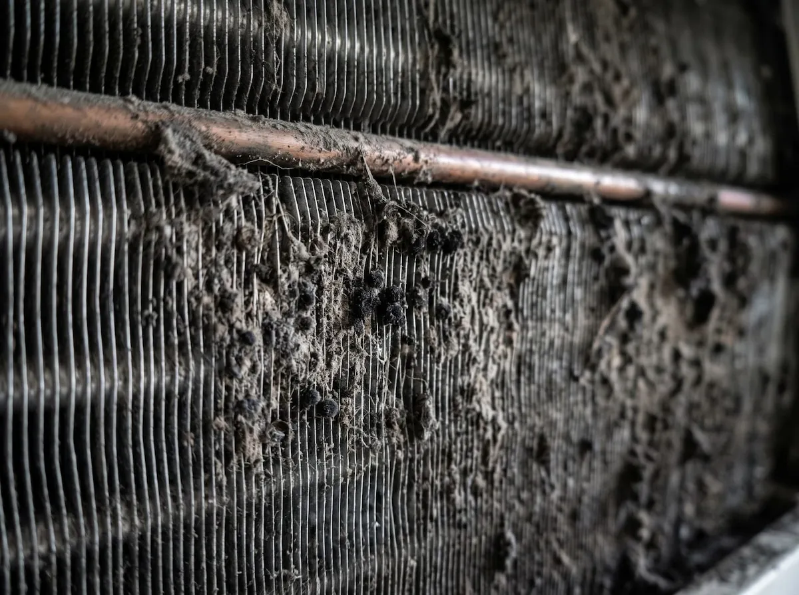
Önce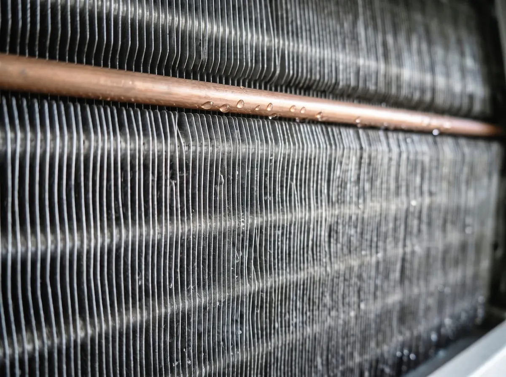
Sonra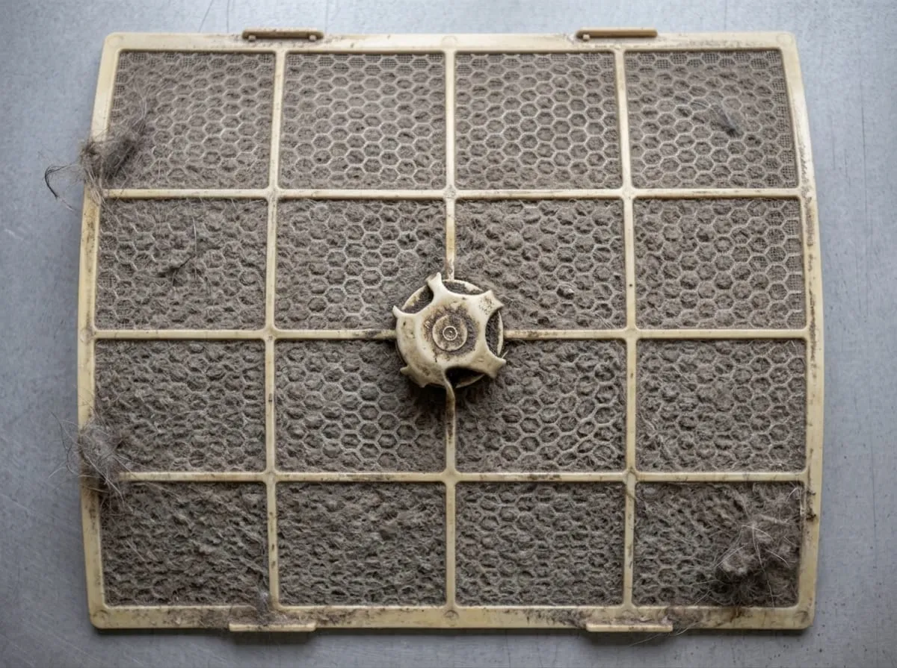
Önce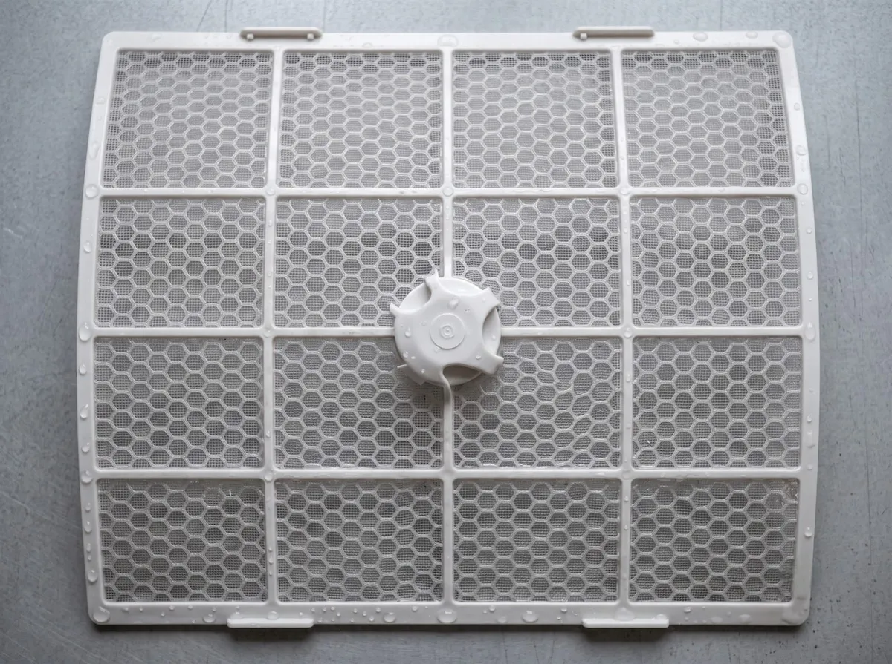
Sonra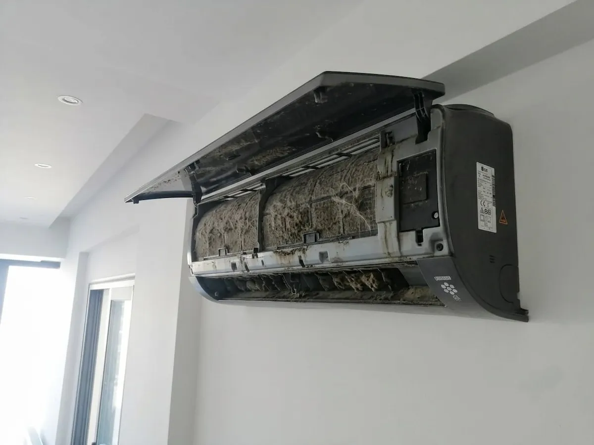
Önce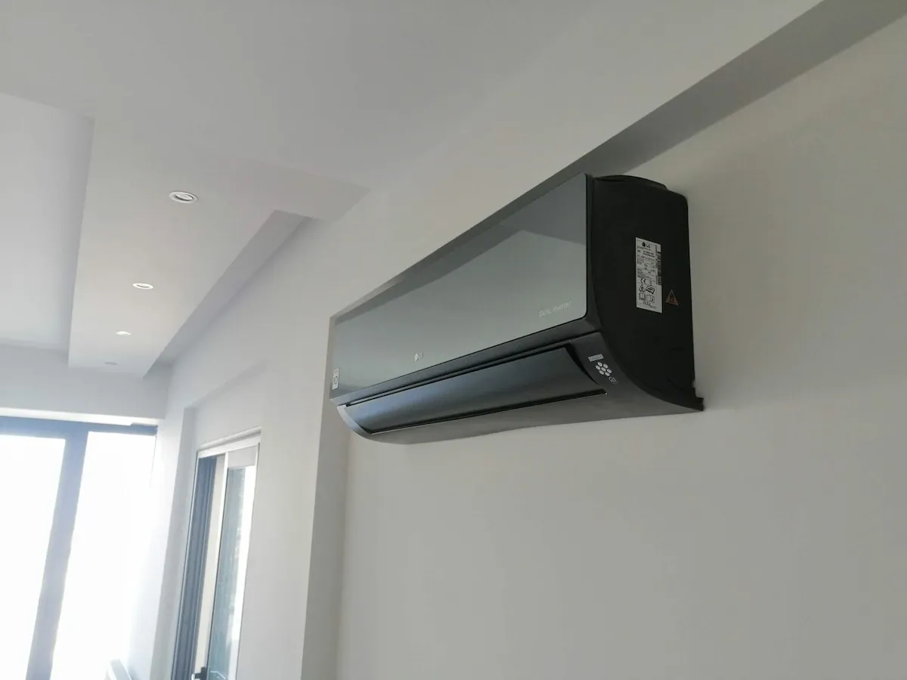
Sonra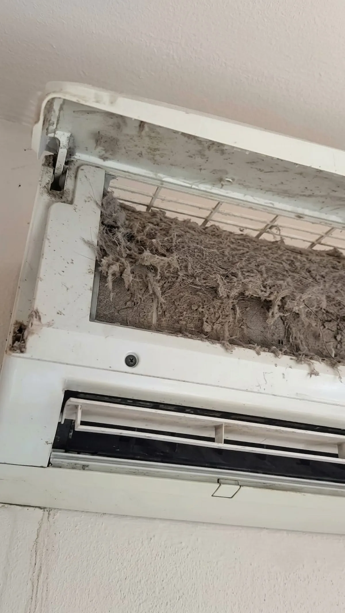
Önce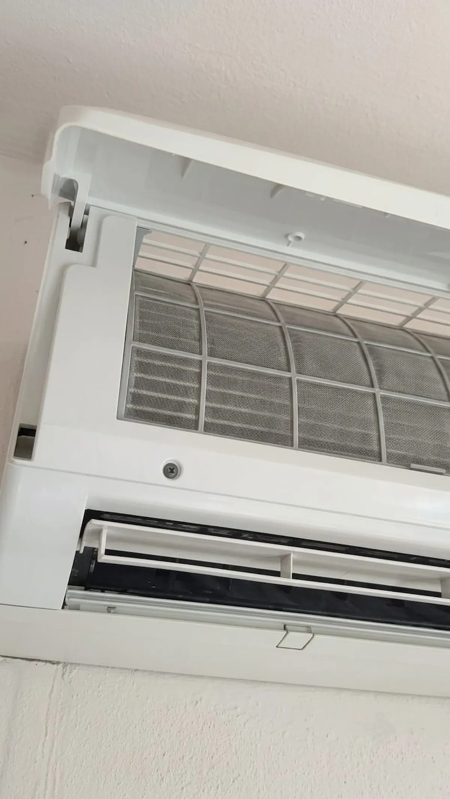
SonraKlima satışı, kurulumu, tamiri, temizliği ve bakımı ile ilgili en çok merak edilen soruları yanıtladık.
Klimadan gelen kötü koku genellikle iç üniteye yerleşen küf, bakteri ve nemli ortamda biriken organik artıklardan kaynaklanır. Standart filtre temizliği bu sorunu çözmez, kimyasal derin temizlik gerekir. Alanya'da aynı gün servisle klimanızın evaporatörünü ve drenaj tavasını dezenfekte ediyoruz.
Klima toz üflüyorsa iç ünite filtreleri ve fan pervanesi ciddi şekilde kirlenmiş demektir. Filtrenin sadece silkelenmesi yetmez; fan kanatlarının ve evaporatörün basınçlı su ve kimyasal ile yıkanması gerekir. Bu işlem hem solunan havanın kalitesini artırır hem klima ömrünü uzatır.
Küf kokusu kimyasal dezenfeksiyon olmadan kalıcı geçmez. Spreyler ve ev tipi çözümler geçici sonuç verir, 1-2 hafta sonra koku tekrar başlar. Profesyonel kimyasal klima temizliği, küf ve bakterileri kaynağında yok ettiği için kalıcı çözümdür.
Evet, kirli filtre ve tıkanmış serpantinler klimanın soğutma performansını %30'a kadar düşürebilir. Bakım sonrası performans çoğunlukla normale döner. Eğer temizlik sonrası hâlâ soğutmuyorsa gaz kaçağı veya kompresör arızası olabilir; bu durumda tamir servisimizle arızayı gideririz.
Klima temizlik ücreti, cihazın tipine (split, kaset, VRF, salon tipi), kapsamına (standart bakım veya kimyasal derin temizlik) ve kat/erişim şartlarına göre değişir. Net fiyat için bizi arayın, klimanızın detayını belirtin, dakikalar içinde şeffaf fiyat verelim. Sürpriz ek ücret yoktur.
Ev tipi split klimalar için yılda 1 kez kimyasal temizlik önerilir; yoğun kullanılan veya tozlu ortamlarda yılda 2 kez yapılmalıdır. Alanya'nın deniz ikliminde tuz ve nem birikimi nedeniyle özellikle yaz başında bakım kritiktir. VRF ve ticari sistemler için ise her 6 ayda bir bakım gereklidir.
Sattığımız ikinci el klimalar montaj öncesinde teknik kontrolden geçirilir; gaz basıncı, kompresör ve soğutma performansı test edilip gerekli bakımı yapılarak teslim edilir. Sıfır klimalarda ise ilgili markanın orijinal garantisi geçerlidir.
Standart bir split klima montajı, ortam koşullarına ve boru/kablo mesafesine bağlı olarak genellikle birkaç saat içinde tamamlanır. VRF ve çoklu sistemlerde süre projenin büyüklüğüne göre değişir.
Mobil servis araçlarımızla Alanya'nın tüm mahallelerine ve çevre bölgelerine aynı gün servis sağlıyoruz.
Klima satışı, kurulumu, tamiri, bakımı ve temizliği için bize telefon, WhatsApp, e-posta veya sosyal medyadan 7/24 ulaşabilirsiniz.
7 Gün 24 Saat Kesintisiz Saha Hizmeti
Fiziki ofisimiz bulunmamaktadır. Alanya'nın tüm mahalle ve ilçelerine adreste mobil servis hizmeti vermekteyiz.
Klima bakımı acil müdahale gerektiren bir işlemdir. Size en hızlı sürede yardımcı olabilmemiz için form doldurmak yerine doğrudan Hemen Arayın veya WhatsApp üzerinden iletişime geçin.